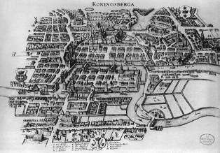
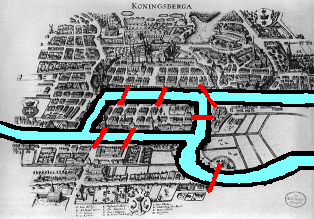
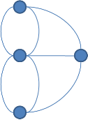
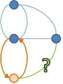
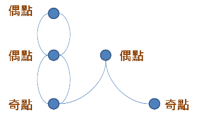
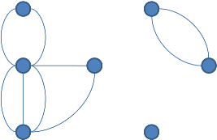
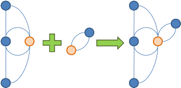
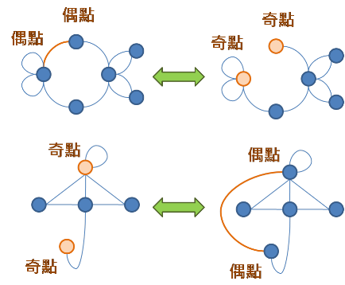

Circuit
程度★ 難度★
Circuit
經過圖上各處的一條環狀路線。在圖論中，Circuit常與Cycle這個字混用，不過Circuit比較強調「經過圖上各處」這件事情。
下面是要介紹的內容：
一、以邊為主：
Euler Circuit：經過圖上所有邊剛好一次的環。
Euler Trail：經過圖上所有邊剛好一次的路徑。
Chinese Postman Problem：經過圖上所有邊「至少一次」的環，經過的邊盡量少。
當邊有權重時，則經過的邊的總權重盡量少。
Edge-disjoint Path Cover：覆蓋圖上所有邊的一群路徑，路徑不重疊但可以相交。
請見本站文件「Cover」。
二、以點為主：
Hamilton Circuit：經過圖上所有點剛好一次的環。
Hamilton Path：經過圖上所有點剛好一次的路徑。
Travelling Salesman Problem：經過圖上所有點剛好一次的環，「邊有權重」。
Knight's Tour：移動騎士經過西洋棋盤上所有格子剛好一次的環。
Vertex-disjoint Path Cover：覆蓋圖上所有點的一群路徑，路徑不重疊也沒必要相交。
請見本站文件「Cover」。
Euler Circuit / Euler Trail
程度★ 難度★★★
Euler Circuit（Euler Tour）（Euler Cycle）
註：Euler可改為Eulerian
Euler Circuit是經過圖上每一條邊各一次的一條連續路線，這條路線的起點和終點要相同。
拿著筆沿著這條路線進行描繪，可以一筆劃就畫出原圖，還能回到當初的下筆處。
其他參考資料：http://www.mathematische-basteleien.de/house.html。
Seven Bridges of Königsberg
http://en.wikipedia.org/wiki/Seven_Bridges_of_Königsberg。
中文稱之為「七橋問題」，由著名的數學家Euler所解決。

有一說是當地居民的休閒活動就是遊覽那七座橋，大家都在嘗試找一條可以經過七座橋各一次，然後回到原處的路線。這活動蔚為風潮，許多數學家聽到這個消息後，也致力於解決這個問題，卻都無疾而終。這個問題也傳到了Euler的耳中，最後他想出了一個漂亮的證法。
另外還有一個比較長一點的童話版本：有天國王想召王宮貴族一起出去散散心，遊覽他的庭園。國王他打算從他的城堡出發，看一看他的庭園花草，以及在他庭園裡的七座橋上散散步。然後回到城堡裡去。由於天氣一定很好、陽光一定很強，屆時出發後絕不要在同一座橋上反反覆覆的走來走去，一直曬太陽，看同樣的風景，那多煩悶。
國王於是下令叫他的臣子們好好的規劃一下出遊路線，每一座橋都要參觀到，而且絕不能讓大家走同樣的橋兩次。臣子們想了很久，卻連一條路線都規劃不出來，國王只好召來聰明的數學大臣Euler來解決這個問題。Euler奉旨後，自行在家沒日沒夜的閉關了三天，終於解決了這個問題：他證明出路線不存在！
Euler當然要能向國王解釋路線為何不存在，要不然國王肯定氣得叫人把他吊起來，後果不堪設想。Euler想到，無論陸地和橋的形狀、距離、位置是如何，要找出合適的遊覽路徑，只跟橋與陸地如何連接有關係。Euler首先把庭園的地圖，簡化成我們在圖論中所看到的「圖」，點就是陸地，線（邊）就是橋。Euler發明的這張「圖」包含了充分的連接資訊，他也是第一個使用「圖」來解決問題的數學家。
接著Euler想到，如果每一座橋只能穿過一次，那麼一座橋就成了去而不回的單行道。然後，對圖上的某一個點來看，一旦從某座橋進入了一次，就要從另一座橋走出去一次，而不會一直停留在某個點上——這跟從哪裡走來、怎麼走來、哪裡出去、怎麼出去無關。所以，只要看到有個點有奇數個邊，也就是有塊陸地有奇數座橋，就表示有這塊陸地有一條橋會讓國王走得過去、卻走不出來，此時就得重複走一座橋、或不走這座橋——這就代表著國王的遊歷路線不存在。
不知道國王後來還有沒有出遊？不過Euler的這個證明過程倒是出名了。數學家們為了紀念Euler的這項貢獻，把一筆劃走完所有邊一次後恰好回到起點的路線，稱作Euler Tour，Tour即是遊覽的意思；至於Euler Circuit則是另一個比較精準的用詞。
奇點與偶點
偶點：連著偶數條邊的點，稱作偶點。 奇點：連著奇數條邊的點，稱作奇點。
根據七橋問題的解釋，當一張圖上所有點都是偶點並且相互連通，則存在Euler Circuit。
下圖中的所有點都是偶點，但是因為不連通，所以不存在Euler Circuit。
拆接性質
一個Euler Circuit在某點相交，即可在該點拆成兩個Euler Circuit：
同樣的，兩個Euler Circuit可在某點相接，合成一個Euler Circuit：
尋找Euler Cirucit的演算法（Hierholzer's Algorithm）
從Euler Circuit的拆接性質，一個大的Euler Circuit可拆成小的，小的可接成大的——很自然的就想到Divide and Conquer。
分割問題的方法是隨意在圖上走一圈。從圖上移除此圈之後，剩下來的部分，一定會形成一個（或數個）Euler Circuit，銜接在先前那圈的某個（些）點上。剩下來的部份再找Euler Circuit，然後接回一開始亂繞的圈，就完成了原圖的Euler Circuit。
Divide：在圖上亂繞一圈，分成已繞完的邊、未繞過的邊。
Conquer：已繞完的邊看作是一張圖，是個Euler Circuit了。
未繞過的邊看作是一張圖（或數張圖），遞迴找出那個（或那些）Euler Circuit。
Merge：把剩下來的邊繞出的那個（或那些）Euler Circuit，接回原來亂繞的那圈。
我們先確定存不存在Euler Circuit，再去嘗試找出Euler Circuit，兩者不混在一起做。
驗證連通性得用到Graph Traversal走遍整張圖，尋找Euler Circuit的過程也是在走遍整張圖──若能兩者擇其一，就可以節省時間。有個簡單的做法是，找完Euler Circuit之後，看看是否每一條邊都繞過，即能判斷連通性，不必使用Graph Traversal。
1. 判斷圖上是否所有點都是偶點。 2. 挑選一個適當的起點，開始遞迴亂繞圈圈找Euler Circuit。 3. 看看圖上所有邊是否都繞過，有繞完表示連通。
圖的資料結構為adjacency matrix的話，可以以O(V^2 + E)時間求出一個Euler Circuit；用adjacency list的話，可以以O(V+E)時間求出一個Euler Circuit。
從無向圖上找出一種Euler Circuit
我們先嘗試用迴圈實作亂繞一圈，試一下水溫。
如此找到的是字典順序最小的Euler Circuit。
如果使用的資料結構是adjacency lists，那麼每個list都要先排序過，才能以O(V+E)找出字典順序最小的Euler Circuit。
如果想要用迴圈實作，則需要一個stack，並用linked list記錄Euler Circuit，才能找出字典順序最小的Euler Circuit。
從有向圖上找出一種Euler Circuit
有向圖的情況下，就將每個點的入邊與出邊分開來看，如果入邊與出邊的數量相等，表示有路可走。
除此之外的部份，都與無向圖的情況相同。
從圖上找出各種Euler Circuit
可以採用backtracking。無法在多項式時間內完成。
Euler Trail
註：Euler可改為Eulerian
Euler Trail是經過圖上每一條邊各一次的一條連續路線，起點和終點可以相同、也可以不必相同。
一筆劃問題
一筆劃問題在中國流傳已久，古時候是休閒遊戲，大意是：給定一個圖案，要如何一筆劃畫出整個圖案。
將圖案化作圖論中的圖，一筆劃問題即是判斷圖上有沒有Euler Trail，並嘗試找出Euler Trail。
Euler Trail與Euler Circuit之間的關係
Euler Circuit去掉一條邊，就形成了Euler Trail。連接Euler Trail的起點和終點，補上一條邊，就形成了Euler Circuit。
Euler Circuit本身也是Euler Trail，是起點和終點相同的Euler Trail，而且可以任何一點都可以作為Euler Trail的起點。
一張無向圖上都是偶點並且相互連通時，就會有Euler Circuit。而Euler Trail可由Euler Circuit刪去一條邊而得，所以只要一張無向圖上恰有兩個奇點、或沒有奇點，並且每一點都連通時，就會有Euler Trail。
至於無向圖的情況，就將每個點的入邊與出邊分開來看：一、有一點入邊比出邊少一條（起點），另有一點入邊比出邊多一條（終點），其他的點出邊與入邊一樣多。二、或者是，所有點的出邊與入邊一樣多。再加上連通性，就會有Euler Trail。
UVa 117 291 302 10054 10129 10441 10506 10596 10735
Chinese Postman Problem
程度★★ 難度★★
中國郵差問題
郵差叔叔走訪每條大街小巷，讓家家戶戶都收到信。
給定一張圖，找出一條環狀路線，圖上每條邊至少經過一次，並且距離最短。
無向圖之演算法
http://web.mit.edu/urban_or_book/www/book/chapter6/6.4.4.html
1. 先判斷整張圖是否為一個強連通分量，否則無解。 2. 找出圖上所有奇點，一定是偶數個。 3. 找出所有奇點點對之間的最短路徑長度。 4. 把這些奇點做最小權匹配，權重採用剛才算的最短路徑長度。 5. 把匹配邊加在原圖上，再找歐拉環，即得中國郵差路徑之權重。 6. 將匹配邊改成其代表的最短路徑，即得中國郵差路徑。
時間複雜度為六項步驟總和。各條匹配邊所代表的最短路徑，絕對不會重疊。
有向圖之演算法
1. 先判斷整張圖是否為一個強連通分量，否則無解。 2. 找出圖上所有出邊數不等於入邊數的點。 3. 於上述找到的點，找出所有點對之間的最短路徑長度。 4. 令d(x)為x點出邊與入邊的數量差。 出邊多於入邊的點x，建立d(x)份，放在X側。 出邊少於入邊的點y，建立d(y)份，放在Y側。 最後建立X側到Y側的邊，權重採用剛才算的最短路徑長度。 算最小權二分匹配。 4. 合理的做法是建立最小權最大流模型： 把出邊多於入邊的點x，放在X側。拉一條源點到x點的邊，權重為零，容量為d(x)。 把出邊少於入邊的點y，放在Y側。拉一條y點到匯點的邊，權重為零，容量為d(y)。 最後建立X側到Y側的邊，權重採用剛才算的最短路徑長度，容量為無限大。 算最小權最大流。 5. 把匹配邊加在原圖上，再找歐拉環，即得中國郵差路徑之權重。 6. 將匹配邊改成其代表的最短路徑，即得中國郵差路徑。
時間複雜度為六項步驟總和。
另一種方式是，設定每條邊容量下限皆為一，再找Min-Cost Circulation，即得中國郵差路徑。
Hamilton Circuit / Hamilton Path
程度★ 難度★★
Hamilton Circuit（Hamilton Cycle）
註：Hamilton可改為Hamiltonian
Hamilton Circuit是指圖上所有點恰好都經過一次的一條連續路線，這條路線的起點和終點要相同。
一張圖可能有許多種Hamilton Circuit。
Hamilton Path
註：Hamilton可改為Hamiltonian
圖上所有點都恰好經過一次的一條路徑。
Hamilton Circuit去掉一條邊，就形成了Hamilton Path。連接Hamilton Path的起點和終點，補上一條邊，就形成了Hamilton Circuit。
Hamilton Circuit本身也是Hamilton Path，是起點和終點相同的Hamilton Path，而且可以在任何一點當起點。
演算法
判斷一張圖存不存在Hamilton Circuit，以及找出一張圖的其中一種Hamilton Circuit，這兩者都已被證明是NP-complete問題，目前世界上尚未存在有效率的演算法，可以解決這兩個問題。很多人聲稱自己找到了多項式時間的解法，但是無法讓所有人信服：http://www.win.tue.nl/~gwoegi/P-versus-NP.htm。
暫且用backtracking試試看吧，依序枚舉路徑上的各個點，時間複雜度為O(V!)。
演算法
並不是所有的圖都難以找出Hamilton Circuit。有些連結性質較強的圖，容易找到Hamilton Circuit，甚至已被證明一定含有Hamilton Circuit：http://mathworld.wolfram.com/HamiltonianCircuit.html。
例如一張無向圖的所有不相鄰兩點，都滿足degree相加大於等於V，便有O(V^2)的演算法可以判斷出此圖是否含有Hamilton Circuit，並找出它：http://www.math.fau.edu/locke/Dirac.htm。
一、隨機走出一條路徑，盡量長： 如果是路徑，則從步驟二開始；如果恰好形成環，則從步驟三開始。 輪流進行步驟二與步驟三，直到形成Hamilton Circuit為止。 如果無法操作表示此無向圖無Hamilton Circuit。 二、路徑變環： 路徑(p1, p2, ..., pk)。 路徑上找到一條邊(pi, pi+1)，同時原圖又有邊(pi, pk)與邊(pi+1, p1)， 去掉邊(pi, pi+1)、接上邊(pi, pk)與邊(pi+1, p1)， 形成環(p1, p2, ..., pi, pk, pk-1, ..., pi+1, p1)。 三、環變路徑： 環(p1, p2, ..., pk, p1)。 環上找到一點pi，同時原圖又有邊(pi, q)連到環外一點q， 就去掉邊(pi, pi+1)、接上邊(pi, q)， 形成路徑(q, pi, pi-1, ..., p2, p1, pk, pk-1, ..., pi+1)。 或者去掉邊(pi, pi-1)、接上邊(pi, q)， 形成路徑(q, pi, pi+1, ..., pk-1, pk, p1, p2, ..., pi-1)。
UVa 775
Travelling Salesman Problem
程度★ 難度★
旅行推銷員問題
一個周遊各國的商人，他想去所有不同的城市買賣東西。商人為了節省車馬費，打算從其中一個城市出發，各個地方剛好經過一次之後，回到原城市。所有城市之間都有路，請規劃出距離最短的路線，以及算出距離。這個問題其實也就是找一個權重最小的Hamilton Circuit。
演算法（Backtracking）
最簡單的解法，是產生所有的地點排列方式，從中選出時間花費最短的路線。時間複雜度是O(N!)，N為地點個數。
演算法（Dynamic Programming）
請參考「Dynamic Programming」。
Knight's Tour
程度★ 難度★
Knight's Tour
把一隻騎士放在西洋棋棋盤上，騎士能不能不重複、一筆劃地走過棋盤上六十四個方格後繞回原點：http://mathworld.wolfram.com/KnightsTour.html。
此問題可看做Hamilton Circuit的特例。目前已有多項式時間演算法，給定N x M的棋盤，可以找到其中一個Knight's Tour。
Warnsdorff's Rule
每一步都走向後續路線最少的格子，但是這個方法有時會出錯。
另外可再加上：當分支數目相同時，就走向二維座標距離比較遠的格子。
【待補程式碼】
UVa 10255